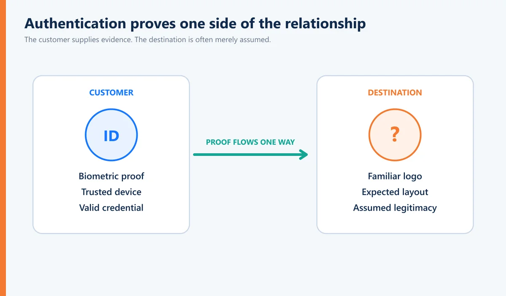
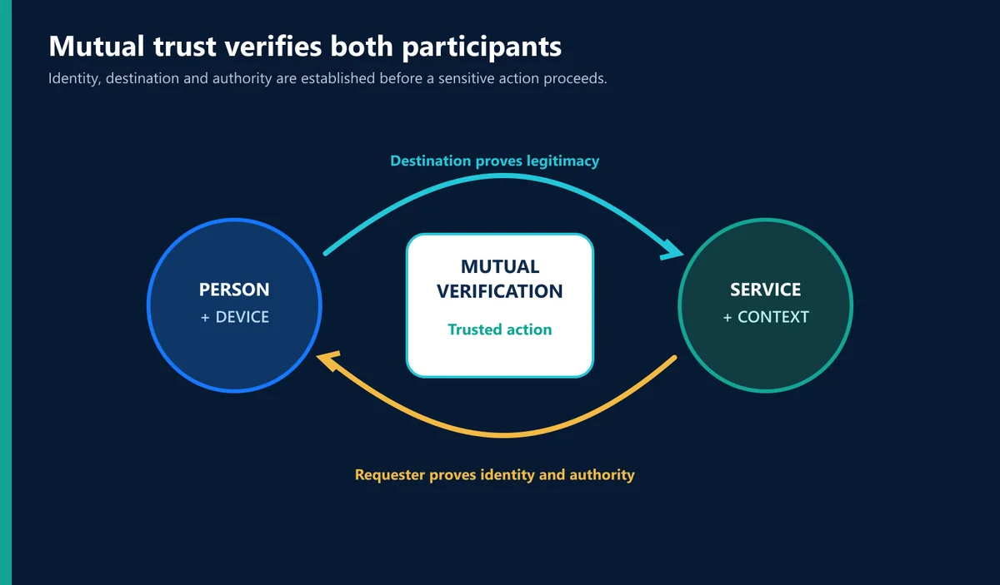
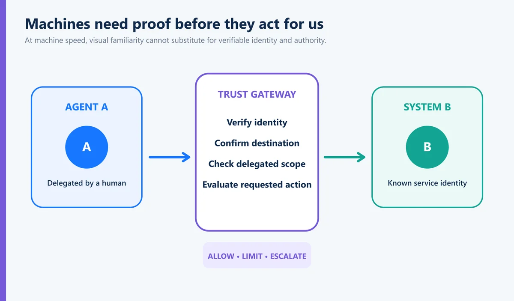
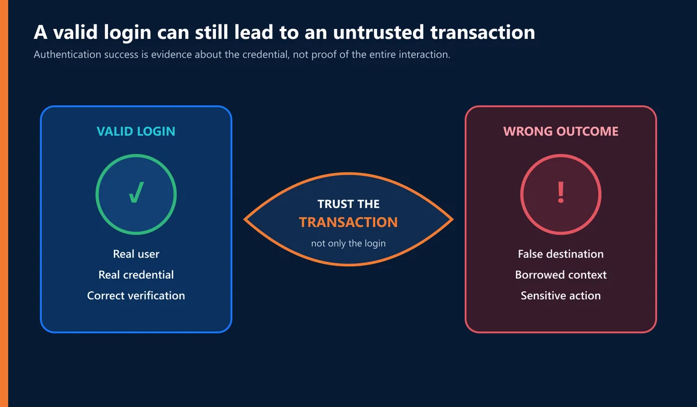

Imagine doing something you’ve probably done hundreds of times.
You need to check your bank account.
Instead of typing the bank’s address, you search for it.
The familiar name appears near the top of the results. You click.
The website looks right.
Logo. Colors. Login screen. Everything where you expect it to be.
The site asks you to authenticate.
So you do.
There’s only one problem.
You’re real. The website isn’t.
That scenario is at the center of some fascinating new research from Fortra’s Intelligence and Research Experts (FIRE) team. In Q2 2026, its researchers observed a more than 40% increase in a technique they’ve named “Chameleon SEO Poisoning.” Attackers manipulate search results so fraudulent financial websites can appear prominently when people search for things like their bank’s customer portal or credit-card login. (Fortra)
That’s concerning enough.
But the clever part is what happens next.
The fraudulent site can effectively change its appearance depending on who’s visiting.
If a security scanner or analyst visits the domain directly, it may see an inactive page or fake 404.
But when an ordinary customer reaches that exact same domain from a poisoned search result, the site recognizes how they arrived and serves the phishing page instead. Fortra says these sites can remain active for days or weeks because conventional scanning may never see what the victim sees. (Fortra)
It’s clever.
It’s disturbing.
And I think it exposes a much bigger problem with the way we’ve traditionally thought about authentication.
We Keep Asking the User the Same Question

For decades, authentication has revolved around some version of:
“Prove who you are.”
We started with passwords.
Then we added security questions.
One-time codes.
MFA.
Authenticator applications.
Push notifications.
Biometrics.
Cryptographic credentials.
Passkeys.
We’ve invested enormous amounts of money and engineering talent in getting better at determining whether the person trying to access an account is legitimate.
And we should.
But look at the Chameleon attack from the customer’s perspective.
They search for their bank.
They click what appears to be the bank.
The website looks like the bank.
Then the website asks:
“Prove who you are.”
And here’s the part I can’t get past:
Why doesn’t the customer get to ask the same question?
The Wrong Destination Can Still Ask the Right Security Questions
This is what makes phishing so interesting from an identity perspective.
The attacker doesn’t necessarily need to defeat authentication.
Sometimes the attacker simply needs to get between the legitimate user and the legitimate destination.
Then something strange happens.
The wrong destination asks the right person to authenticate.
The customer may enter a perfectly valid username.
A perfectly valid password.
Perhaps even a perfectly valid second factor.
From the customer’s perspective, they’re following the rules.
The problem isn’t necessarily that the person failed authentication.
The problem is that nobody adequately authenticated the other side of the relationship to the person.
That is a very different security problem.
We Have Made Destination Verification a Human Responsibility
For years, we’ve tried to solve this through education.
Check the URL.
Don’t click suspicious links.
Look for misspellings.
Use bookmarks.
Don’t trust unexpected messages.
Make sure you’re on the legitimate website.
All good advice.
Fortra makes a similar practical recommendation in response to this attack: financial-services customers should avoid using search engines to reach banking portals and instead rely on official mobile applications or manually bookmarked URLs. (Fortra)
That’s sensible.
I’ll follow that advice myself.
But I also think we need to ask a harder question:
Why is determining whether the bank is really the bank still largely the customer’s responsibility?
Think about who we’re asking to perform that security function.
Our parents.
Our children.
A retiree checking an account.
A small-business owner moving money between accounts.
An employee rushing between meetings.
Someone sitting in an airport.
Someone distracted.
Someone tired.
Someone who simply wants to pay a bill.
We’re asking ordinary people to make increasingly sophisticated cybersecurity judgments before performing ordinary digital transactions.
Meanwhile, the people trying to fool them are getting better tools.
That doesn’t feel like a durable architecture.
AI Is Going to Make “Looks Legitimate” Even Less Useful
For years, we’ve trained people to recognize fraud by looking for imperfections.
Bad grammar.
Odd formatting.
A strange logo.
An awkward email.
A poorly constructed website.
Something that just doesn’t look right.
Those clues aren’t disappearing entirely.
But artificial intelligence is steadily reducing their usefulness.
AI can produce professional writing.
Personalized messages.
Convincing imagery.
Cloned voices.
Synthetic video.
And increasingly sophisticated impersonation.
Attackers don’t need to create a perfect counterfeit.
They only need to create one that’s good enough for someone to trust for a few minutes.
So we’re entering a world where:
Looks legitimate
and
Is legitimate
are becoming very different things.
That’s why I believe verification has to move beyond appearance.
Perhaps Authentication Has Been Too One-Sided
This question has bothered me for a long time:
Why does authentication traditionally require me to prove who I am without requiring the destination to prove itself to me?
There are historical reasons.
Authentication grew up in environments where the destination was largely assumed to be known.
You were sitting at a company terminal.
Connected to a company network.
Accessing a company system.
The uncertainty was the person at the keyboard.
So the computer asked:
Who are you?
That made sense.
Then everything changed.
Banking moved online.
Commerce moved online.
Healthcare moved online.
Work moved to the cloud.
We began conducting consequential transactions with organizations through a global network full of people trying to impersonate them.
Yet the basic authentication relationship remained remarkably similar.
Organization → User: Prove yourself.
I think the next generation needs to look more like:
Verified User ↔ Verified Destination
That’s not simply stronger authentication.
It’s a different way of thinking about trust.
Trust Should Work Both Ways

This is one of the questions that eventually led us at Identité® to develop our patented Full Duplex Authentication®.
The idea didn’t begin with:
“How can we add another authentication factor?”
It began with something much simpler:
Why is only one side proving itself?
Full Duplex Authentication was built around the principle that authentication can establish confidence in both directions.
The organization verifies the legitimate user.
But the user also receives evidence that they’re interacting with the legitimate organization.
User ↔ Legitimate Destination
I mention FDA here because the Fortra research illustrates exactly why the underlying idea matters.
Not because any single authentication technology eliminates phishing.
It doesn’t.
And not because mutual authentication replaces the detection, monitoring, takedown and brand-protection measures Fortra recommends.
Those remain important. Fortra specifically argues that security teams need context-aware scanning that reproduces the victim’s actual search journey because static scans can miss these cloaked sites. (Fortra)
The point is larger.
Authentication shouldn’t require trust from one participant while assuming it from the other.
Mutual Trust Is Different From More MFA
This distinction matters.
When a new authentication attack appears, the instinct is often:
Add another factor.
Sometimes that’s appropriate.
But suppose I convincingly impersonate your bank.
If I can get you to interact with me believing I’m your bank, adding more proof that you are really you doesn’t necessarily address the reason you entered the interaction in the first place.
We may be strengthening the wrong side of the conversation.
That’s why I don’t think the future is simply about adding factors.
It’s about establishing relationships in which legitimate participants can verify one another.
Mutual Trust.
The bank should know it’s really me.
I should know it’s really the bank.
That sounds almost obvious when you say it aloud.
Which makes it interesting that the digital world has operated differently for so long.
Zero Trust Should Apply to the Destination Too
We’ve spent years talking about Zero Trust.
Don’t implicitly trust a user because they’re inside the network.
Don’t automatically trust a device.
Don’t permanently trust a session.
Verify.
Evaluate context.
Apply least privilege.
Assume conditions can change.
All sensible principles.
But perhaps there’s another logical extension:
Don’t implicitly trust the destination either.
Why should a website become trusted merely because it looks familiar?
Why should a search result inherit trust because an algorithm ranked it first?
Why should a logo establish identity?
Why should the user be expected to make that determination alone?
If we’re serious about Zero Trust, skepticism shouldn’t flow in only one direction.
The Chameleon Attack Is Really About Borrowed Trust
There’s another reason I find Fortra’s research so interesting.
The attacker is borrowing trust from several places simultaneously.
We trust the search engine enough to assume the first few results are probably legitimate.
We recognize the institution’s name.
We recognize the logo.
We recognize the login experience.
Perhaps the browser shows nothing obviously alarming.
Each piece contributes a little confidence.
None actually establishes that the destination is the organization we intended to reach.
This connects to a broader change I’ve been writing about:
Increasingly, the attacker’s objective isn’t to break trust. It’s to inherit it.
Chameleon SEO Poisoning is a beautiful example.
The attacker doesn’t have to break the bank’s authentication system.
They inherit trust from the search result.
Then from the brand.
Then from the familiar interface.
And finally, if everything works as intended, the legitimate customer provides the attacker with something even more valuable: proof of their own identity.
The attacker has turned our authentication model against us.
Better Security Should Ask More of the Architecture, Not the Customer
There is a tendency in cybersecurity to respond to every new threat by giving users another responsibility.
Don’t click this.
Check that.
Recognize this.
Verify that.
Use this tool.
Watch for that warning.
At some point, we need to acknowledge that attackers specialize in deception.
Customers don’t.
So rather than continually asking people to become better fraud investigators, I’d rather make the architecture better at establishing legitimacy.
That’s a philosophy we’ve returned to repeatedly:
Better authentication shouldn’t mean asking legitimate users to do more. It should mean asking the architecture to do more.
Verify identity.
Verify destination.
Use cryptographic evidence where appropriate.
Understand context.
Consider intent.
Apply authorization intelligently.
Continue evaluating whether the conditions that established trust still exist.
And introduce friction when something doesn’t make sense.
The objective isn’t more security theater.
It’s better evidence.
This Becomes Even More Important When Machines Start Acting for Us

There’s another reason mutual trust matters beyond today’s phishing attacks.
AI agents are beginning to act on behalf of humans and organizations.
Eventually an agent may initiate transactions, access applications, move information or communicate with another autonomous system without a person visually examining every destination first.
Then the question becomes:
How does Agent A know System B is really System B?
And equally:
How does System B know Agent A is legitimate and properly authorized?
The human ability to glance at a screen and think, “Something doesn’t look right,” becomes much less relevant when interactions happen at machine speed.
That means trust increasingly needs to be verifiable rather than assumed.
The Chameleon attack may be targeting humans today.
The architectural lesson is much larger.
Successful Authentication Isn’t the Same as a Trusted Transaction

This may be the distinction that matters most.
A user can successfully authenticate during a fraudulent interaction.
That’s uncomfortable because we tend to think of authentication success as a security success.
But they’re not necessarily the same thing.
The authentication mechanism may have correctly determined:
Yes, this is Eusebio.
While completely missing:
Eusebio believes he’s interacting with his bank, but he isn’t.
Identity was verified.
The transaction was still untrustworthy.
That’s why I’ve become increasingly convinced that authentication has to be considered within a larger trust architecture.
Who is participating?
Who is on the other side?
What is being authorized?
What does the user intend to do?
Does the context make sense?
And do the conditions that established trust still exist?
Authentication should establish trust. It should not create unlimited trust.
And it certainly shouldn’t establish trust in only one direction.
Maybe the User Should Get to Say “You First”
Fortra’s researchers have identified a clever and important evolution in phishing. Their recommendations for detecting these cloaked attacks deserve attention from financial institutions, SOC teams, hosting providers and consumers. (Fortra)
But I think their research also gives us an opportunity to question something much older than SEO poisoning.
For decades, organizations have asked:
“How do we know this is really our customer?”
We have built an entire authentication industry around answering that question.
Now perhaps we need to give equal weight to another:
“How does the customer know this is really us?”
That isn’t a rejection of MFA.
Or biometrics.
Or passkeys.
Or phishing-resistant credentials.
We need all of those technologies to continue improving.
It’s an acknowledgment that identity exists on both sides of a digital relationship.
And therefore trust should too.
The wrong website shouldn’t be able to ask the right person to prove who they are while offering little meaningful proof of its own legitimacy.
We can build something better than that.
The future of authentication isn’t simply:
Prove who you are.
It’s:
Let’s establish who we both are.
That is the difference between one-way authentication and Mutual Trust.
And it’s why our vision at Identité can be expressed in three very simple words: